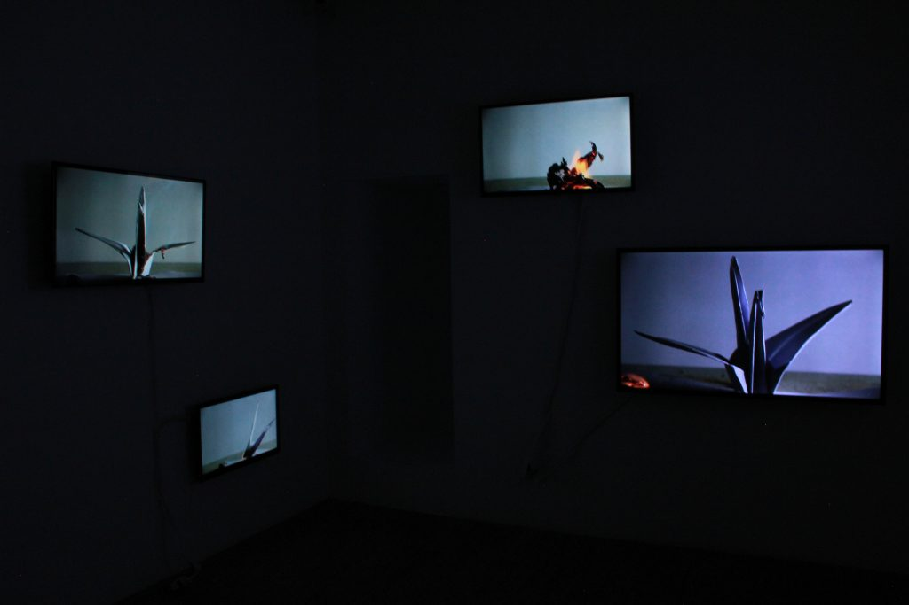
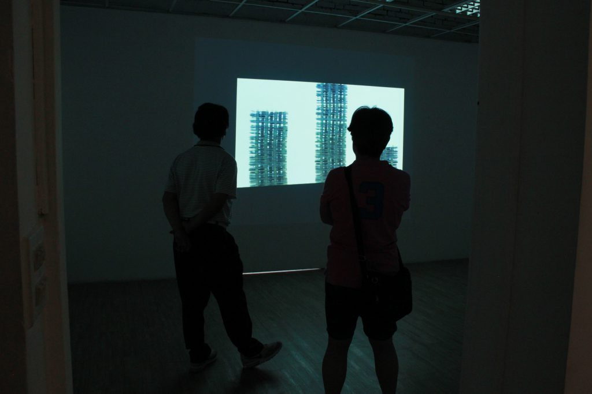
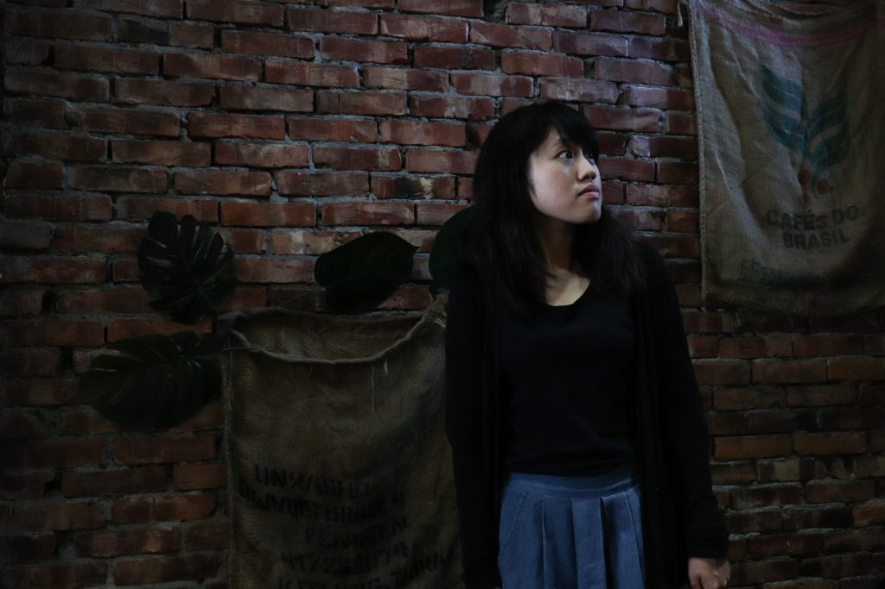

林莉庭
2018/11/08
【記者林莉庭台中報導】服藥完畢後留下的藥殼隨時間層層堆疊，形成用藥人的生命軌跡。目前就讀東海大學美術系碩士在職專班的王信瑜6日至11日在東海43號－創藝實習中心舉辦《空的時間》個展，透過錄像作品表現對時間的主觀感受，也將憂鬱症患者自我對話和觀看世界的角度融入創作中。
王信瑜透過創作錄像抒發心情，將憂鬱症患者看待世界的方式呈現在作品中。 圖／林莉庭攝王信瑜說明，他將自身對時間的認知放入作品，藉由加速、放慢或倒轉作品的時間，讓觀者體會物件變化的樣貌。「我就是呈現出我世界的時間。」他解釋此次展覽命名為《空的時間》，是讓時間脫離客觀標準、不受外在因素影響，形成與外界隔絕的真空狀態，並將他對時間的主觀認知帶入作品。
在訪談時和信瑜溝通她的創作理念，一開始有點難以理解，但後來打成逐字稿，會一直想像一個畫面：信瑜被包裹在透明的薄膜內，屏除外界對時間的認知，在這個屬於她的空間裡，只有她能掌握時間。以我的觀點而言，會認為信瑜想表達消化難受情緒的時間，是不固定、無法度量的，因此下一段才會引用相似意思的句子。「會覺得我的時間就是用藥物來計算的。」王信瑜在作品中表現對生命逝去的體悟，親人離世、同學自殺的接連衝擊一度令王信瑜難以承受，需倚靠藥物穩定情緒，他坦言：「我對於情感上面的復原能力很差。」作品〈堆疊〉便將藥物作為拍攝對象，隨著藥殼越疊越高，代表持續服藥的時間越來越長。
觀展民眾賴彥碩也對作品〈堆疊〉印象深刻，他坦言自己也需固定服用藥物，作者在作品中呈現生命以藥物為計時單位的觀點，提醒他藥物已改變他的生活作息。
另一件作品〈管〉以色彩鮮豔的藥丸投入長型試管，隱喻藥丸吞入食道的過程，藥丸被擺設地像罐裝糖果，與一般人對藥物的印象不同。王信瑜指出目前大眾對精神病理解不足，「大家會覺得吃藥很嚴肅、絕望。」但對他來說藥物僅是一項維繫生活的必需品，服藥就像人需要吃飯一樣自然。
我身邊也有親密的人需固定服藥，為了不讓親友知道，她必須說這是維他命，因為她害怕別人的眼光，或者根據既定印象兀自貼上的標籤，彷彿需要吃藥代表她無力擔當事情、無法照顧好自己。她常賴皮問我能不能別吃藥了，有時我會動怒，要她吃藥才能維持健康，我的怒氣源於不捨；也有時她覺得自己已經復原了，我也認為看起來一切都很好，但我們都沒有勇氣說出「不然停藥好了」這句話。藥確實是必需品，它是某些人賴以生存的依靠，而它會帶來絕望，但同時也會賦予推進生活的希望。「統一性的東西套在不同個體上是很暴力的。」王信瑜認為，許多人由於忽略每個人對情緒處理能力的差異，因此不理解憂鬱症。他在作品〈復生〉中安排時間倒轉，使原先看來相似的灰燼，隨時間逐漸顯現出被燃燒的紙鶴原貌，他補充每隻紙鶴原先樣貌皆相異、擁有各自的特質，不能以單一標準評斷。
 作品〈復生〉中的灰燼是紙鶴燃燒產生的結果，透過焦黑的外觀難以辨認原貌。 圖／王信瑜提供對王信瑜而言，創作錄像是自我療傷的過程，經由反覆述說並與人分享創傷，能學習與原本沈重的情緒和故事拉開距離，王信瑜說：「變成作品後，就可以用另一種角度去看它。」
我能理解信瑜以創作抽離出自身情緒的方法，因為我便是倚賴採訪、寫稿，去深刻聆聽別人的故事，以覆蓋自己心中的憂慮或創傷，我需要時間理清雜亂的思緒，自身心中淤塞無解，便向外去接收、同理他人。 王信瑜希望作品不僅療癒自己過去的創傷，也能增進觀者對憂鬱症的理解。 圖／林莉庭攝
王信瑜希望作品不僅療癒自己過去的創傷，也能增進觀者對憂鬱症的理解。 圖／林莉庭攝王信瑜的指導教授、東海大學美術系專案約聘助理教授徐嘒壎表示，王信瑜的錄像作品具有迷你劇場的風格，像是藥物系列的作品即在鏡頭前細膩地擺設藥品及包裝。
 錄像創作的特性為觀者需花時間與作品互動，體會作品營造的時間感。 圖／王信瑜提供「有創傷、憂鬱的人，需要的並不是正面的話語，而是陪伴。」王信瑜強調，陪伴對憂鬱症患者而言最重要，他創作時因作品相伴得以修復創傷，他也期望作品不僅陪伴自己，也陪伴前來觀展的人們。觀者需花時間體會作品的氛圍及作者編排時間的用意，在觀看的過程中人們便在共同的空間互相陪伴。
我覺得這裡的陪伴是一種無聲的陪伴，只是陪在身旁，不發一語，而這就非常足夠了，也是最適當的陪伴方式。 王信瑜認為憂鬱症患者最需要的是陪伴，也期許作品可以促成人與人相伴，一起度過悲傷的時光。 圖／林莉庭攝採訪後記
這篇報導在預採、報線、採訪、寫稿的過程中，我都不停在想著憂鬱症在我認知中的定義，以及處理這則報導最恰當的方式。
那天去台中的路上，昏昏沈沈地在客運上讀著關於錄像藝術的論文，內容大多關於拍攝技巧或對時代的意義，可能是暈車讓我的思緒一直飄走，腦中只想著等等要問信瑜在創作時如何把這些難以訴說的心情安放在作品中。
那是一種單純想了解一個人感覺，原因並非她是受訪者，而是她把令她煎熬、難耐的情感與人分享，並希望能藉此陪伴同樣受情緒困擾的人們。她盡力直面悲傷後，在自己的作品中寄託著這樣的期望，這讓我好羨慕，也好佩服。
印象很深的是，她談到人們習慣忽略個體差異，憑結果便去想像一件事情的原貌，用概括性的詞彙試圖替人套上標籤，她說：「統一性的東西套在不同的個體上，我覺得是很暴力的。」她說話的語氣沈靜，緩緩道出她眼中觀察到的現實。
這套用在認識一個人的方式上會尤其傷人。藉由對方較不同於社會多數人的樣貌去做出評斷，或是在認知到對方具有某些所謂差異時，開始以自我的既定印象去描繪對方的樣貌，都會阻礙認識對方所有面向的機會，好可惜。
也因此，特別想將信瑜澄澈的雙眼拍下來，覺得她觀察事物的狀態一定很美，正是由於具備如此細膩的心思去感受自己的情緒，讓她的作品不只蘊含對社會提出的反思，也將思念緊緊嵌入其中。
還記得訪談中她說的這麼一段話：「有時候會很希望他是不是還用另一種形式存活在你生命當中，希望能用另外一種形式繼續延續下去，不要是這麼斷裂的感覺。」
像是哀求也像是盼望，對於逝去，可能永遠都尋不著能釋懷的答案。但不時攪動的回憶，其實就是他在招手呼喚你的想念了吧，然後任性地、放肆地想念一番，再憑藉這些溫暖繼續生活。
常覺得每個人都是從主觀運作的世界望出去與人交流，不管多麽親近的對話，雙方之間都隔著窗在溝通，但這並不影響情感流通。人們互動時便打開這扇窗，但仍需留點時間將窗關上，好好跟自己對話，而每個人自我對話的需求都不盡相同，這本來就無關對錯，也不強求理解，但至少不要未經思考便作出敏感、玻璃心、易受冒犯等評論，我珍視的這些人們不應只用這些狹隘的詞彙描述，他們真的都溫暖地像維尼一樣。
然後啊，對稿子還是有很多想修改的地方（總是這樣），對自己的文字還是存有過多顧慮與理想，在寫的時候也差點寫成專欄，不過是真的很感謝逐字逐句幫我改稿的溫柔學長姐。（還有零食可以吃，瞬間充滿動力！）
最後，真的很感謝能與信瑜相遇。
 林莉庭
林莉庭.jpg)